A life in photographs
In the Frame
Some memories become stories. Others live in a photograph, holding pieces of who I was, who I loved, and where I came from.
01 · Roots
Where I
began.
I grew up in a rural farming community in North Central Washington, tucked into the mountains with my mom, stepdad, sister, and brother.
Before the military, before injury changed the shape of my life, I was an athlete, a sister, and a kid from Waterville.
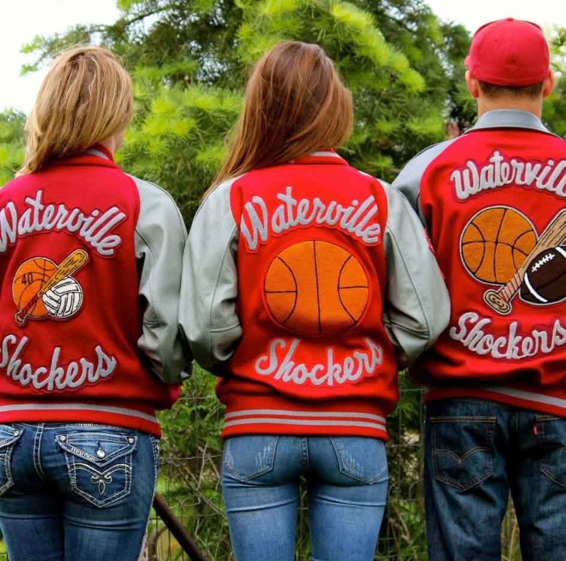
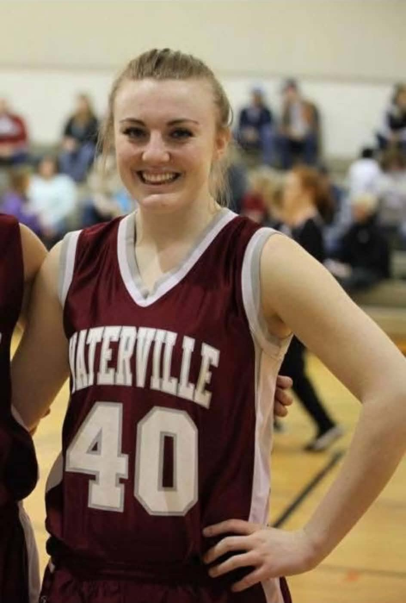
02 · Belonging
The people
who knew me then.
I joined the Marine Corps at 17. I became a Motor Transport Operator, moved around the country, and found a kind of community that is difficult to put into words.
These were not just people I worked beside. They became part of the life I built and part of what made leaving so difficult.
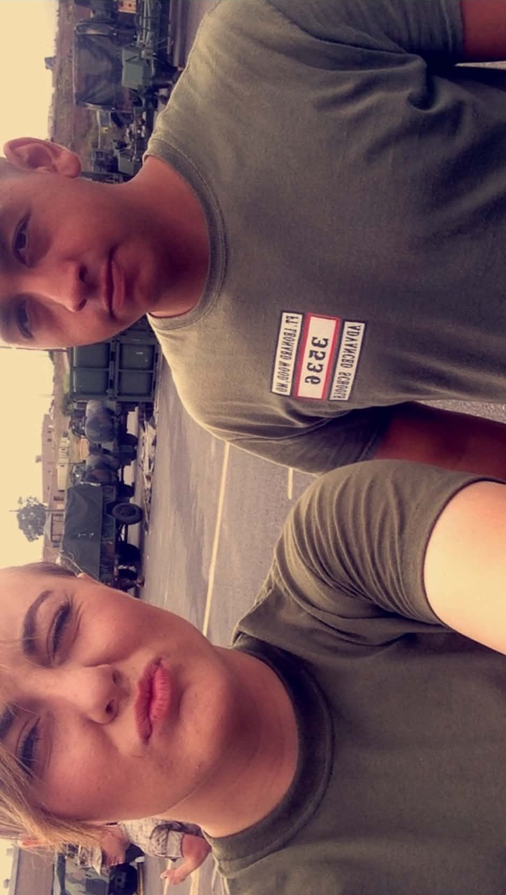
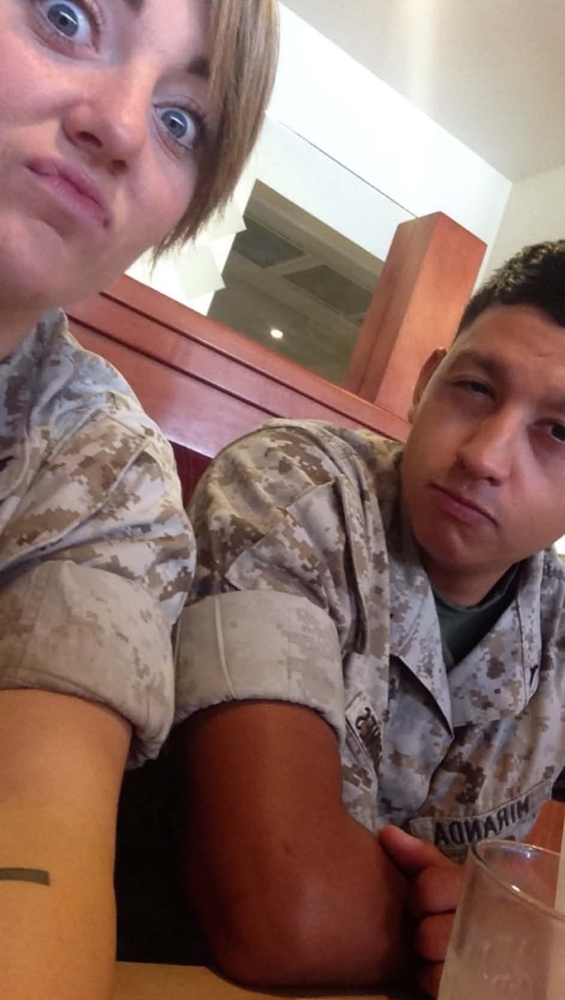
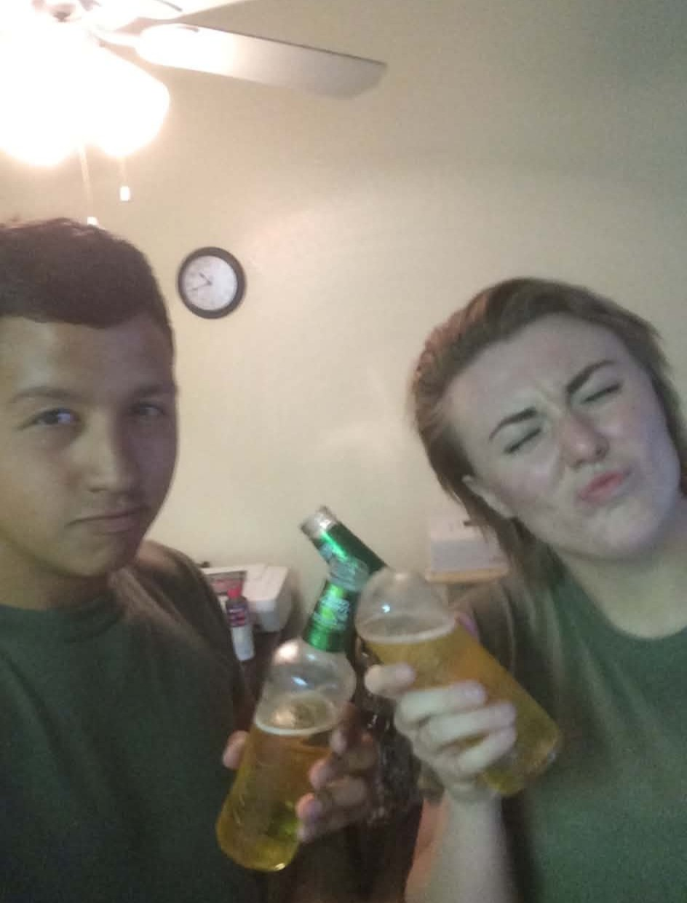
“Many veterans talk about the loss of community, but it isn’t something I feel can be articulated in words.”
With my best friend and battle buddy, Dale Miranda
03 · The Marine I was
More than
the uniform.
The Marine Corps shaped me into the person I am, but even then I was never only one thing. I was a friend, a daughter, an athlete, and someone still figuring out where life would take me.
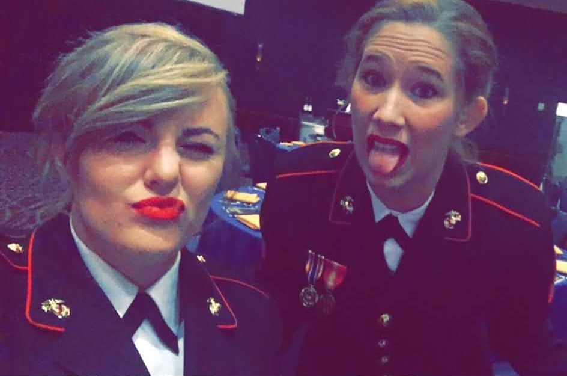
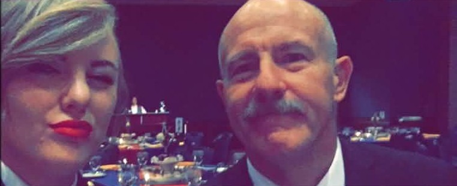
04 · What came next
A life
I never planned.
The military led me to my husband, my best friend in the universe. We met while we were both active duty Marines, and the life that followed gave me a family bigger than I could have imagined.
I have two boys of my own and two older bonus kids. Four children in total, and so much of who I am now is wrapped up in loving them.
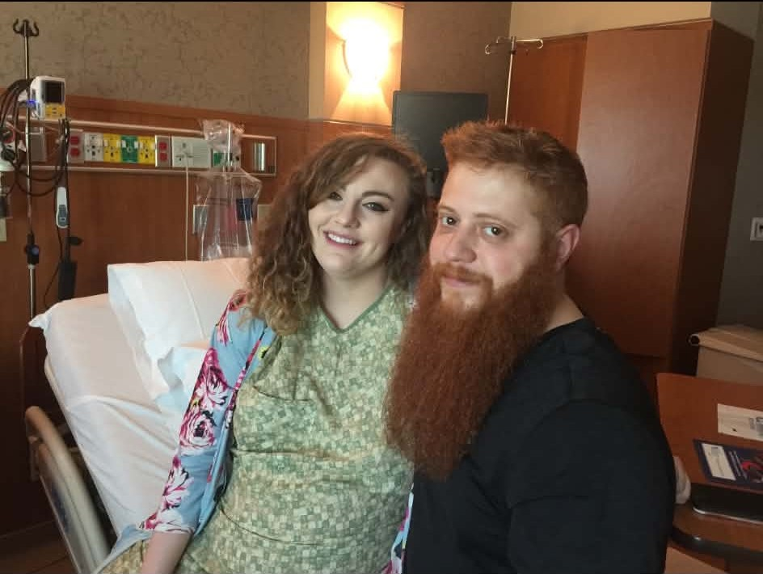
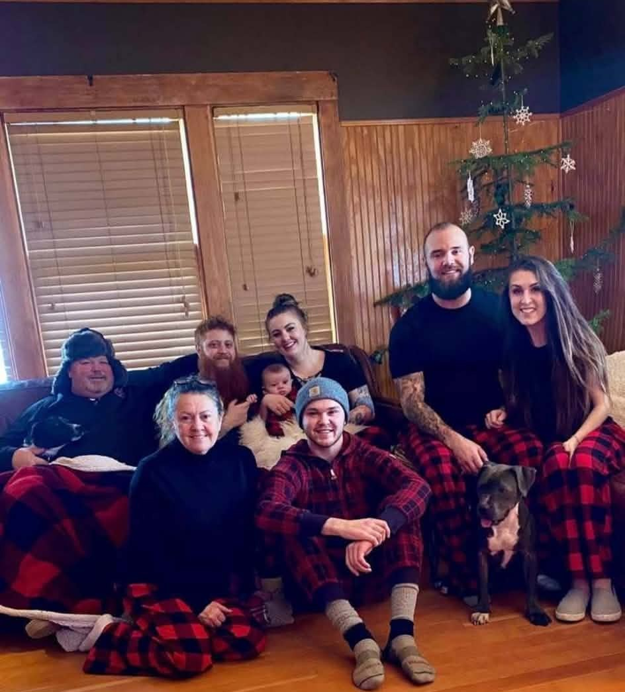
05 · Motherhood
The center
of everything.
As a mom, I find I often only talk about my kids. Maybe that is because so much of my life is measured in the ordinary moments that become memories before I realize it.
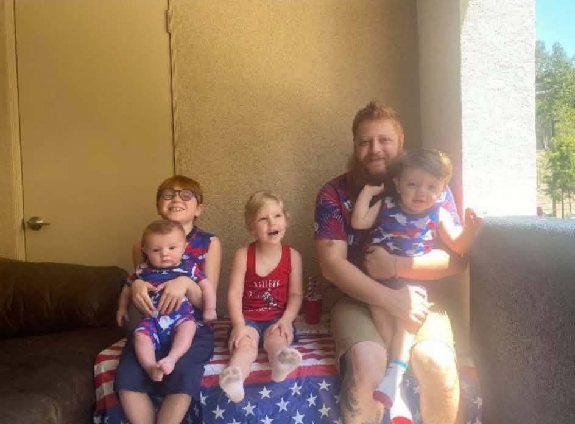
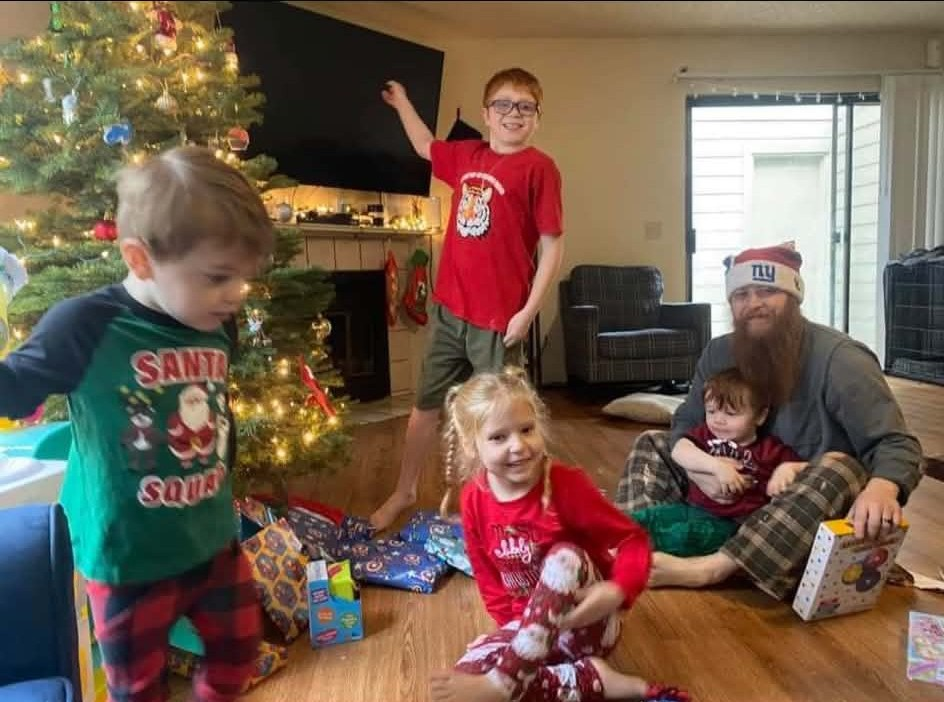
“I am the mother who now pours everything she has into her children.”
06 · Home
The place
beneath it all.
No matter how far I moved, this is part of where my story began. A little farm tucked into the mountains of North Central Washington.
The farmhouse, the outbuildings, the windmill, the horizon. The kind of place that stays with you long after you leave it.
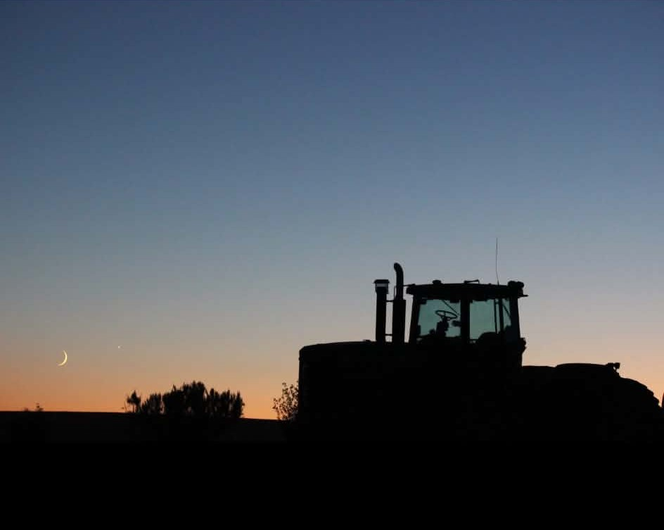
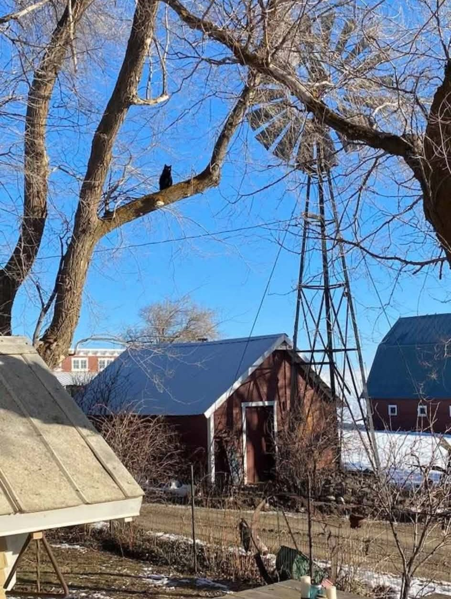
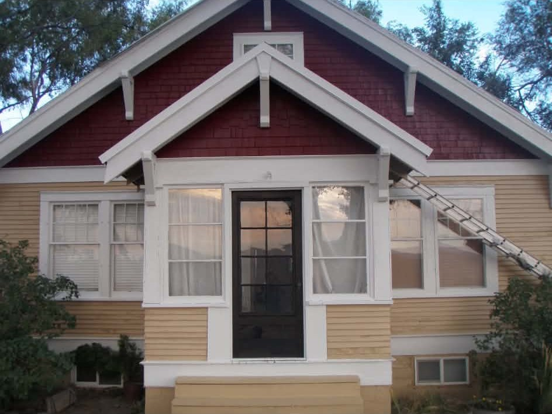
Still becoming
I can look back without believing my best chapters are behind me.
These photographs hold pieces of who I have been, but none of them tell the whole story. My life is still changing. So am I.
The Things I Carry